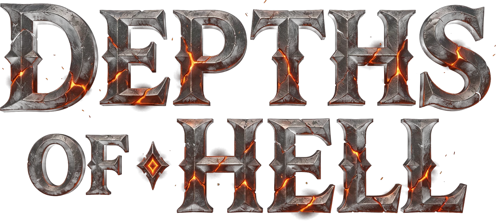

FIRST CIRCLE · 1-6
Behemoth
A butcher with ram horns, a machete and a meat fork. Three health pools, and the last one he fights in the dark.
AN ISOMETRIC DESCENT · SOLO OR CO-OP FOR 3

Ajvar goes down through the circles of Hell, one floor at a time. Every Guardian, every Prince and every cursed blade down there wants him to stay.
THE DESCENT
Each circle is five floors and a Prince waiting at the bottom. The page sinks with you: scroll, and the light changes from kitchen fire to storm to drowned candlelight.
THE FIRST CIRCLE · FLOORS 1-1 TO 1-6
Storerooms, torture halls, a cult chapel and five Guardians, then the hall where Behemoth cooks by lantern light. In his berserk phase the lantern drops and he hunts you in the dark.
THE SECOND CIRCLE · FLOORS 2-1 TO 2-6
Wind, lightning and the drowned cloisters, down to Verrier's throne hall. His Edicts forbid you to move, strike or dash. Break them and his Defiance rune grows.
THE THIRD CIRCLE · FLOORS 3-1 TO 3-6
Sleet fields, the convent dormitory, the refectory, the confessionals and the flooded crypt, under rain that never stops. Cerberus guards the first floor. Luvart waits in the chapel.
THE PRINCES
FIRST CIRCLE · 1-6
A butcher with ram horns, a machete and a meat fork. Three health pools, and the last one he fights in the dark.
SECOND CIRCLE · 2-6
Prince of Principalities and Demon of Disobedience. He stamps laws on the floor and punishes you for breaking them.
THIRD CIRCLE · 3-6
Prince of Angels, living inside Sister Madeleine. Your blades barely touch him: the chapel itself has to bring him down.
GAMEPLAY
Socket skill and buff gems into weapon, helmet, chest and boots. Pairs combine into synergies you discover yourself.
Eleven curses, each a gift with a price. The deeper your Curse, the harder you hit and the harder you are hit.
Bring two friends over the internet with a six-letter room code, or play on your own network.
An endless descent where the Threat keeps rising and the Princes return in their lairs.
Hidden rooms open into platforming gauntlets. Clear one and spin for better gear.
Each Prince carries gems found nowhere else: Butcher's Fork, Great Seal, Forced Ascension and more. Rare, and only from the kill.
PLAYTEST
The playtest is for Windows PCs. Ask for a serial number below; the game updates itself after that.
PATCH NOTES
The Third Circle: the Drowned Convent, polished.
Written from each update automatically.